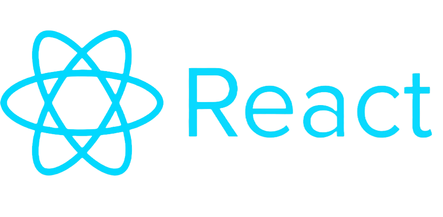
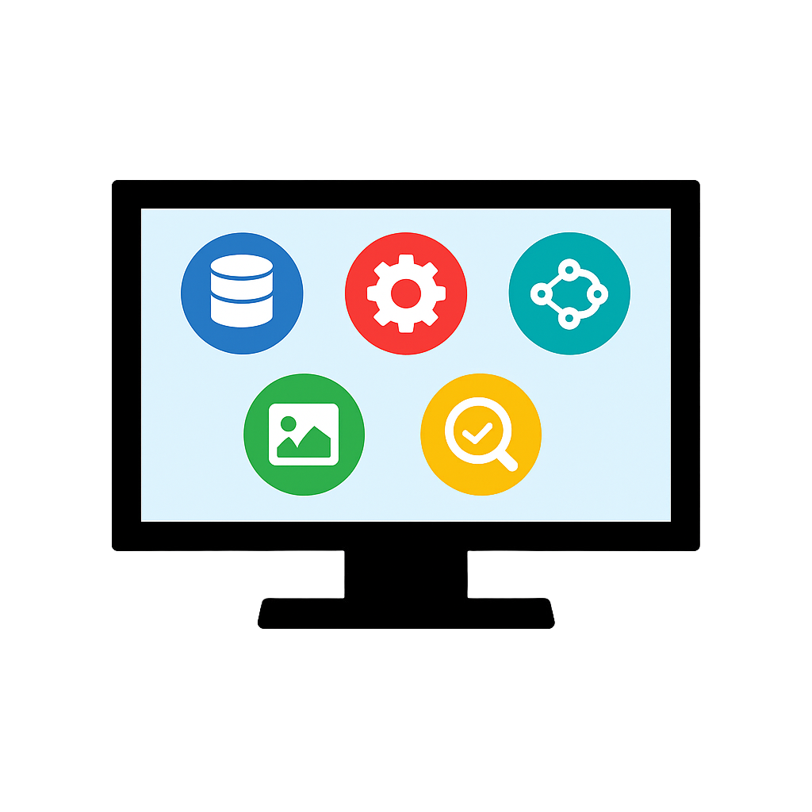

Gallery



A React & FastAPI dashboard for real-time monitoring and management of vision system data with millions of records.
← Back to Home
Built a full-stack client portal using React, Tailwind CSS, and FastAPI to empower industrial vision system users with real-time data insights. Designed for both clients and internal teams to seamlessly manage massive datasets, monitor system health, and streamline model workflows.
Crafted in a dark-mode theme with a grey base and light-blue accents for reduced eye strain and intuitive navigation, ensuring a polished, professional look.